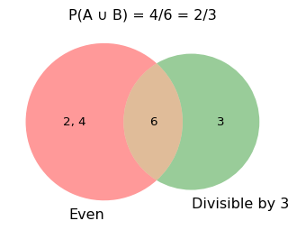
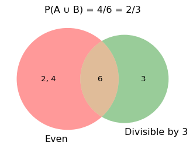
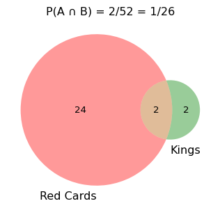
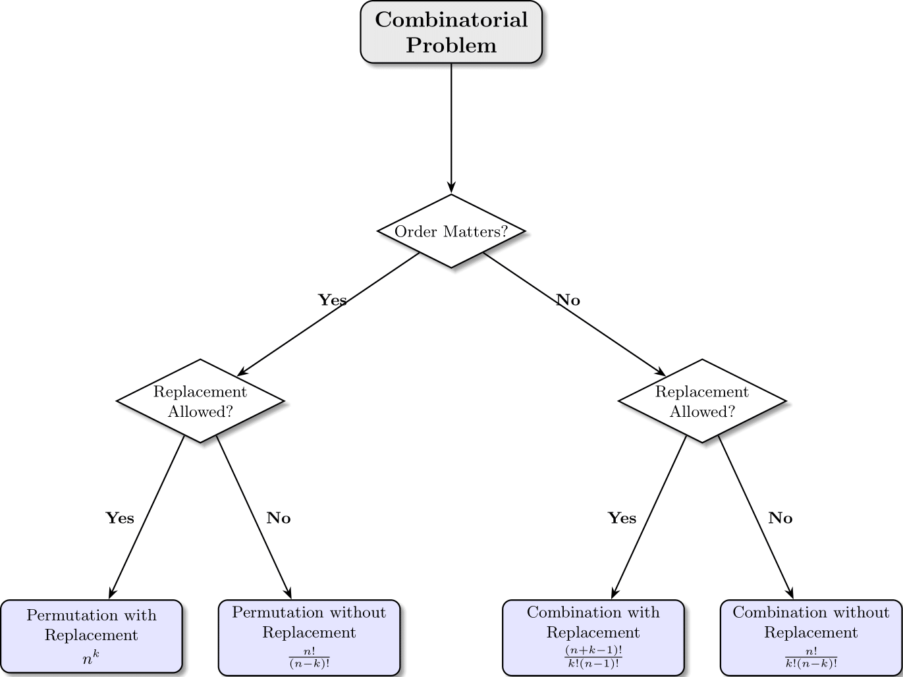
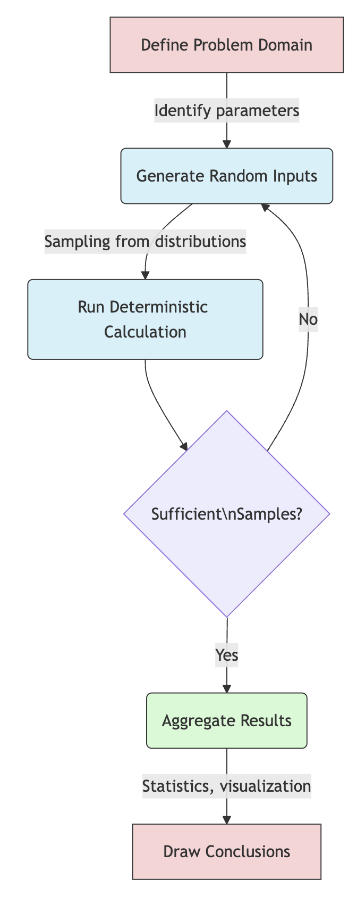

Essential Computational Tools for Economists
import numpy as np
# From lists
a = np.array([1, 2, 3, 4])
# Fixed values
zeros = np.zeros(5)
ones = np.ones((2, 3))
full = np.full((2, 2), 7)
# Sequences
seq = np.arange(10) # 0 to 9
lin = np.linspace(0, 1, 5) # 5 evenly spaced valueszeros: [0. 0. 0. 0. 0.]
ones: [[1. 1. 1.]
[1. 1. 1.]]
seq: [0 1 2 3 4 5 6 7 8 9]
lin: [0. 0.25 0.5 0.75 1. ]# Random from uniform distribution [0,1)
random_uniform = np.random.random(5)
# Random integers (like dice rolls)
dice_rolls = np.random.randint(1, 7, size=10)
# Random from normal distribution
normal_samples = np.random.normal(loc=0, scale=1, size=5)
# Setting the seed for reproducibility
np.random.seed(42)Non-vectorized (slow):
Probability measures how likely events are to occur
Formal definition:
\(P(x)=\frac{\text{count of desired outcomes}}{\text{count of all possible outcomes}}\)
Properties:
Economic examples:
import random
def coinFlip(trials):
heads, tails = 0, 0
for i in range(trials):
r = random.randint(0, 1)
heads += r
tails += 1 - r
return [heads, tails]
trials = 1000
[h, t] = coinFlip(trials)
print(f"Out of {trials} tosses: {h} heads and {t} tails")Out of 1000 tosses: 511 heads and 489 tailsIf A and B are mutually exclusive: \(P(A \cup B) = P(A) + P(B)\)
If not mutually exclusive: \(P(A \cup B) = P(A) + P(B) - P(A \cap B)\)
Example: Rolling a die - P(roll 1 OR 3) = 1/6 + 1/6 = 2/6 - P(roll even OR divisible by 3) = ?

For independent events: \(P(A \cap B) = P(A) \cdot P(B)\)
Example: Drawing cards - P(red card) = 26/52 = 1/2 - P(king) = 4/52 = 1/13 - P(red king) = ?

The mathematical study of counting arrangements and selections
Key Questions:
Economic Applications:
The Big Four:

When order matters and repetition is allowed:
\(n^k\) possible outcomes
where:
Example:
# All possible 2-letter words
# from the set {A,B,C,D}
letters = ['A', 'B', 'C', 'D']
n = len(letters)
k = 2 # word length
possibilities = n**k
print(f"Number of possibilities: {possibilities}")
# Show first few possibilities
words = []
for i in range(n):
for j in range(n):
words.append(letters[i] + letters[j])
print(words[:8])Number of possibilities: 16
['AA', 'AB', 'AC', 'AD', 'BA', 'BB', 'BC', 'BD']When order matters and no repetition:
\(\frac{n!}{(n-k)!}\) arrangements
Example:
When order doesn’t matter and no repetition:
\(\binom{n}{k} = \frac{n!}{k!(n-k)!}\)
Example:
def combination(n, k):
return factorial(n) // (factorial(k) * factorial(n-k))
n, k = 8, 3 # 8 swimmers, 3 medal winners
combs = combination(n, k)
print(f"Number of combinations: {combs}")
# Using scipy
from scipy.special import comb
print(f"Using scipy: {comb(n, k, exact=True)}")Number of combinations: 56
Using scipy: 56When order doesn’t matter and repetition is allowed:
\(\binom{n+k-1}{k} = \frac{(n+k-1)!}{k!(n-1)!}\)
Example:
def iceCreamCombos(flavors):
combos = {}
for i in flavors:
for j in flavors:
for k in flavors:
combo = tuple(sorted([i, j, k]))
if combo not in combos:
combos[combo] = 0
combos[combo] += 1
return len(combos), combos
flavs = {"Vanilla", "Chocolate", "Strawberry",
"Rocky Road", "Cookie Dough"}
count, _ = iceCreamCombos(flavs)
print(f"Total combinations: {count}")Total combinations: 35Core concept: Use random sampling to solve problems
Key steps:
Economic applications:

We can estimate π using a circle inscribed in a square:
import numpy as np
import matplotlib.pyplot as plt
points = 10000
inside = 0
# Generate random points
x = np.random.random(points)
y = np.random.random(points)
# Count points in circle
inside = np.sum((x**2 + y**2) <= 1)
# Calculate pi
pi_estimate = 4 * inside / points
print(f"π estimate: {pi_estimate}")
print(f"True π: {np.pi}")π estimate: 3.1356
True π: 3.141592653589793# Plotting the Monte Carlo points
plt.figure(figsize=(5, 5))
plt.scatter(x[inside], y[inside], s=1, color='blue', label='Inside')
plt.scatter(x[~inside], y[~inside], s=1, color='red', label='Outside')
plt.axis('equal')
# Draw unit quarter-circle for context
circle = plt.Circle((0, 0), 1, fill=False, color='black')
plt.gca().add_patch(circle)
plt.xlim(0, 1)
plt.ylim(0, 1)
# Annotate with π estimate
plt.title(f"Monte Carlo Estimate of π: {pi_estimate:.4f}")
plt.tight_layout()
plt.show()Problem:
Questions:
def gamblers_ruin(initial_money, target_money):
current_money = initial_money
bets = 0
while current_money > 0 and current_money < target_money:
# place bet
current_money -= 1
bets += 1
# roll die
die = random.randint(1,6)
# add winnings
if die > 3:
current_money += 2
return current_money, bets
initial_money = 6
target_money = 12# Run many simulations
num_simulations = 10000
results = [gamblers_ruin(initial_money, target_money)
for _ in range(num_simulations)]
# Calculate probability of success
success = sum([1 for r in results if r[0] >= target_money])
prob_success = success / num_simulations
# Calculate average number of bets
avg_bets = sum([r[1] for r in results]) / num_simulations
print(f"Probability of reaching ${target_money}: {prob_success:.4f}")
print(f"Average number of bets: {avg_bets:.1f}")Probability of reaching $12: 0.5019
Average number of bets: 36.2import random
import numpy as np
import matplotlib.pyplot as plt
# Simulation logic
def gamblers_ruin(initial_money, target_money):
current_money = initial_money
bets = 0
while current_money > 0 and current_money < target_money:
current_money -= 1
bets += 1
die = random.randint(1, 6)
if die > 3:
current_money += 2
return current_money, bets
# Run simulations
initial_money = 6
target_money = 12
num_simulations = 10000
np.random.seed(42)
random.seed(42)
results = [gamblers_ruin(initial_money, target_money) for _ in range(num_simulations)]
# Extract for plotting
bets = [r[1] for r in results]
finals = [r[0] for r in results]Option Pricing:
# Monte Carlo option pricing
import numpy as np
S0 = 100 # Initial stock price
K = 100 # Strike price
r = 0.05 # Risk-free rate
sigma = 0.2 # Volatility
T = 1 # Time to maturity
n = 10000 # Number of simulations
# Simulate stock prices
z = np.random.standard_normal(n)
ST = S0*np.exp((r-0.5*sigma**2)*T
+ sigma*np.sqrt(T)*z)
# Calculate payoffs for call option
payoffs = np.maximum(ST-K, 0)
price = np.exp(-r*T) * np.mean(payoffs)
print(f"Call option price: ${price:.2f}")Risk Assessment:
# Value at Risk calculation
import numpy as np
# Portfolio parameters
initial_value = 1000000 # $1M portfolio
mean_return = 0.08 # 8% expected return
volatility = 0.15 # 15% volatility
horizon = 1/52 # 1 week
confidence = 0.95 # 95% confidence
simulations = 100000
# Simulate returns
r = np.random.normal(
mean_return*horizon,
volatility*np.sqrt(horizon),
simulations)
# Calculate portfolio values
values = initial_value * (1 + r)
# Calculate VaR
VaR = initial_value - np.percentile(values,
100*(1-confidence))
print(f"95% weekly VaR: ${VaR:.2f}")Core concepts:
Economic value:
Next steps: Apply these tools to build economic models of increasing complexity.